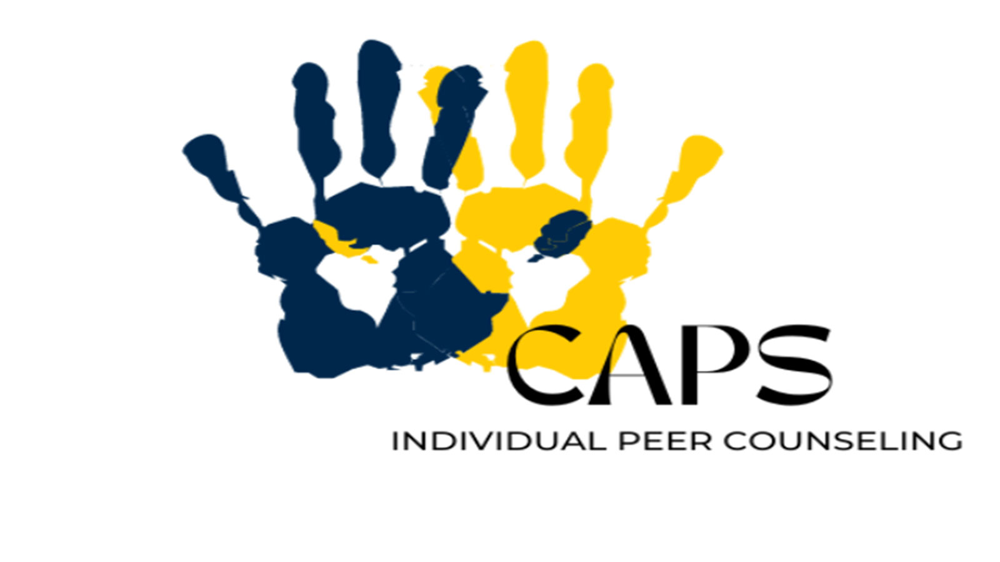

Wellness Coaching:
Work with a wellness coach to develop strategies for managing stress, time, and overall well-being.

We want to provide support for our students through all facets of their lives, including times of crisis. Below are some resources to help you through difficult situations.
Michigan's Counseling and Psychology Services (CAPS) is committed to creating an environment based on our values of multicultural, multi-disciplinary and multi-theoretical practices that allow our diverse student body to access care, receive high quality services and take positive pathways to mental health.
Work with a wellness coach to develop strategies for managing stress, time, and overall well-being.
Participate in mindfulness and meditation sessions to cultivate a calm and focused mind.
Join peer support groups for shared experiences and collective coping strategies.
Whether you have a housing question, health care concern or emergency funding need, the resources on Michigan's Basic Needs site will help you navigate campus life at U-M.